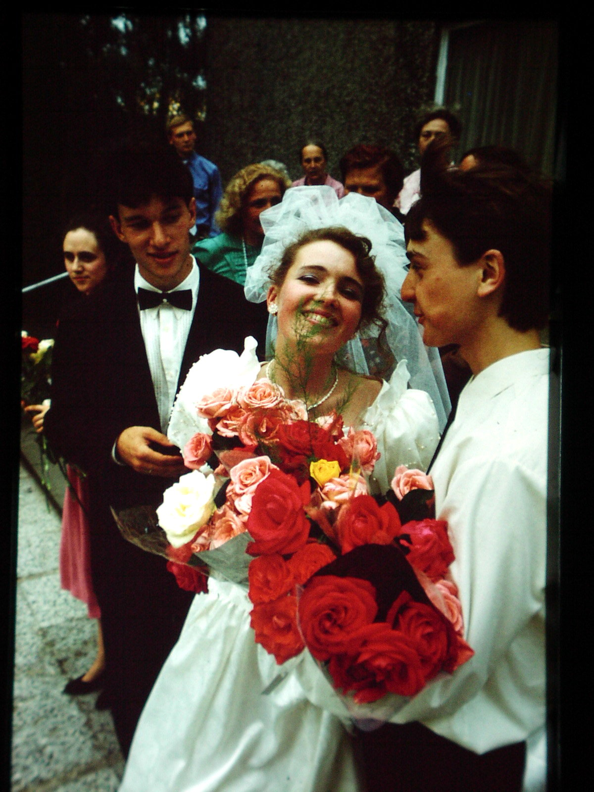
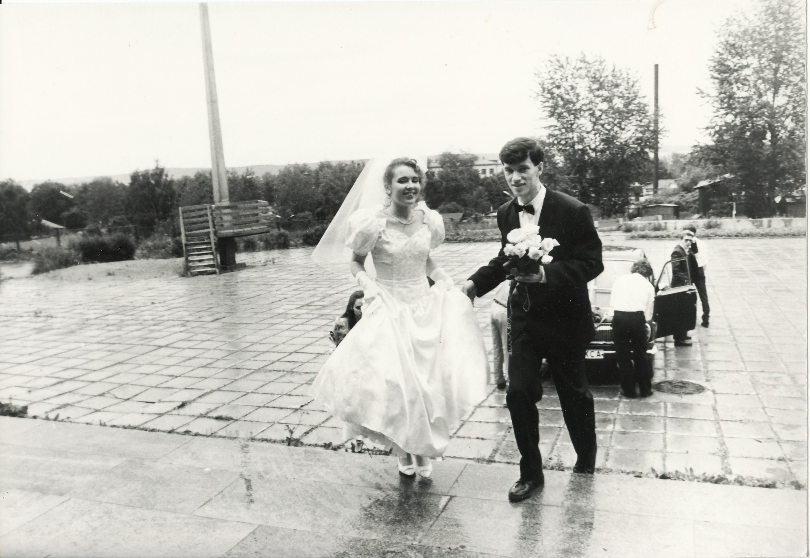
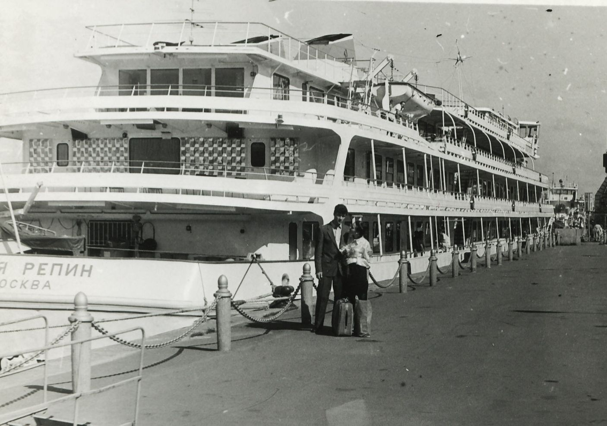

6 июля 1991 года мы с Ириной поженились.

Это было давно.
Подумалось почему-то, что 80% моих нынешних читателей плохо себе представляют то время:
это была другая страна, в которой в магазинах не было вообще ничего;
сахар и многие другие продукты выдавали по талонам (и то только по прописке, которой ни у меня, ни у Ирины очень долго не было :)),
спиртное – тоже только по талонам.
Хорошо, что были ещё и специальные талоны для брачующихся, по которым можно было получить 2 бутылки шампанского и 2 – водки.
Зато из Архангельской области в Карелию летал самолет Ан-2, полет на котором до сих пор вспоминают особо впечатлительные родственники моей жены. Наличие самолета позволило привезти накопленные в Няндоме к свадьбе продукты неиспорченными. Да и в целом, железнодорожные и авиабилеты были существенно дешевле, поэтому на свадьбу в Петрозаводск приехали друзья и родственники из Няндомы, Москвы, Перми, Ленинграда, Новосибирска.
Это было давно.
Но хорошо помнится всё то хорошее, что сделали для нас родные, друзья, коллеги.
Спасибо Сергею Сиротину, директору Карельского отделения ИМА-пресс и тогдашнему моему начальнику за предоставленный шикарный по тем временам автомобиль – черную «Волгу»!
Спасибо Александру Трусову, чуть не впервые взявшим в руки вместо кинокамеры видеокамеру и снявшим наш первый семейный видеофильм! Кстати, смотреть его долго было негде, поскольку видеомагнитофон был страшно дорогим и дефицитным товаром. А все читающие этот текст знают, что такое видеомагнитофон? ;-)
Спасибо Галине Анатольевне Разбивной, тогдашнему директору Дворца пионеров, разрешившей провести большую часть церемонии в помещении Дворца!
Спасибо Василию Петухову за отличные фотографии, снятые двумя фотоаппаратами (с обычной черно-белой пленкой и с цветной слайдовской)!


Спасибо Дине и Жене Степановым, нашим свидетелям!
Спасибо друзьям! Спасибо близким и родственникам!
Спасибо родителям за все то хорошее, что они сделали до, во время и после свадьбы - баз вас ничего этого не было!
Отдельное очень большое спасибо Леониду Юрьевичу и Валентине Алексеевне Хорош – мы с Ириной всегда будем помнить то, что вы для нас сделали!
Это было давно.
Но разве забудешь репетицию вальса ночью накануне свадьбы, на которую я пришел после мальчишника. Но ведь в итоге вальс выучил! :)
Или утюг, который моя молодая жена незаметно положила в наш чемодан, и который я таскал по всей Москве, когда мы добирались до Речного вокзала для отправки в свадебное путешествие (круиз по Волге).

А разве забудешь слезы родителей, понимать которые начинаешь только сейчас, когда нашей дочери уже почти 17 лет.
Это было давно.
И я очень счастлив, что всё это было! И уверен,что ещё очень многое будет! Когда-нибудь я об этом обязательно напишу…
Александр Дворжицкий, июль 2011 года